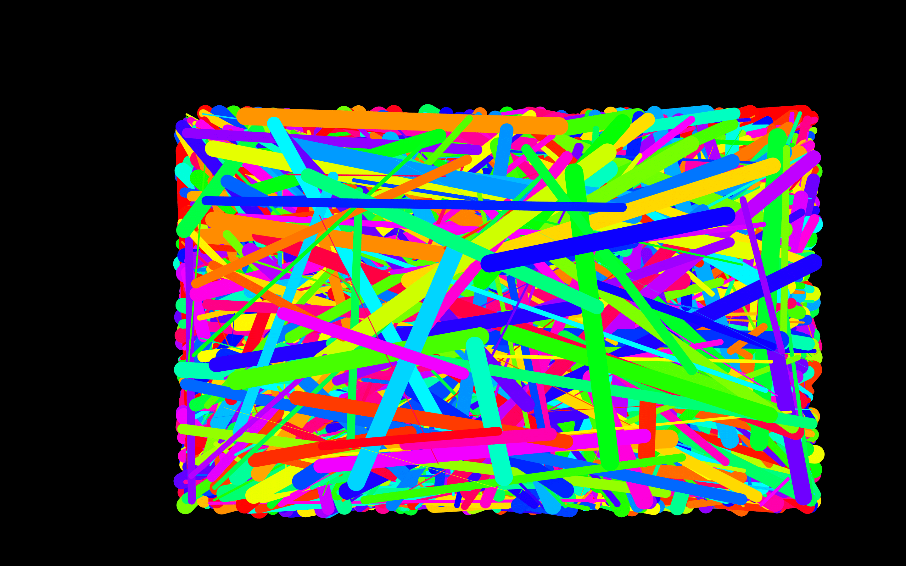
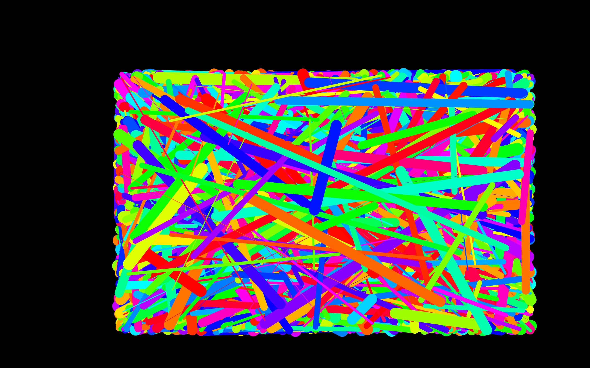
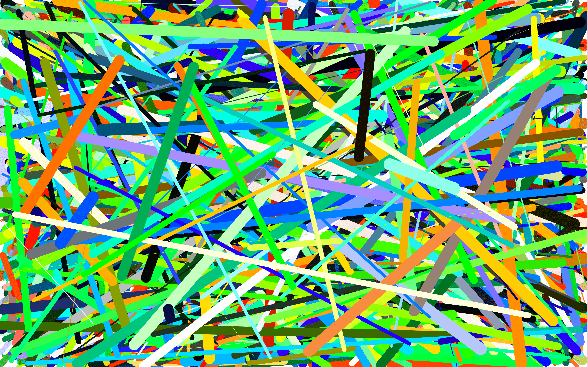
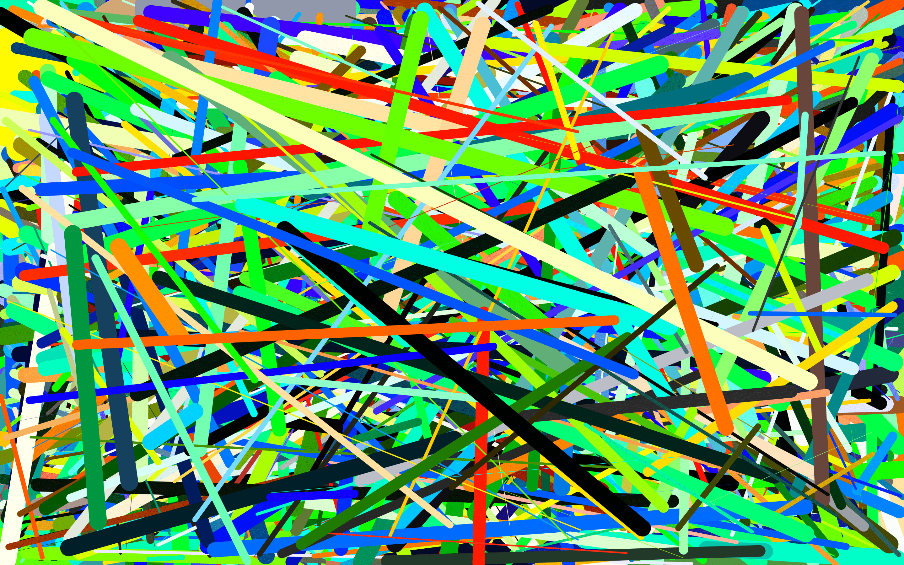

Our Outcomes
Surprisingly, the number of participants we had seems that they were at peace when interacting with our computer generated artefact, as there are only 2 out of 11 that shows the circular paint drip. This paint drip would only present when there is a 0.1 increase in volume, whereas the lines is set to 0.01.
Check out our designs!
- 
- 
- 
- 